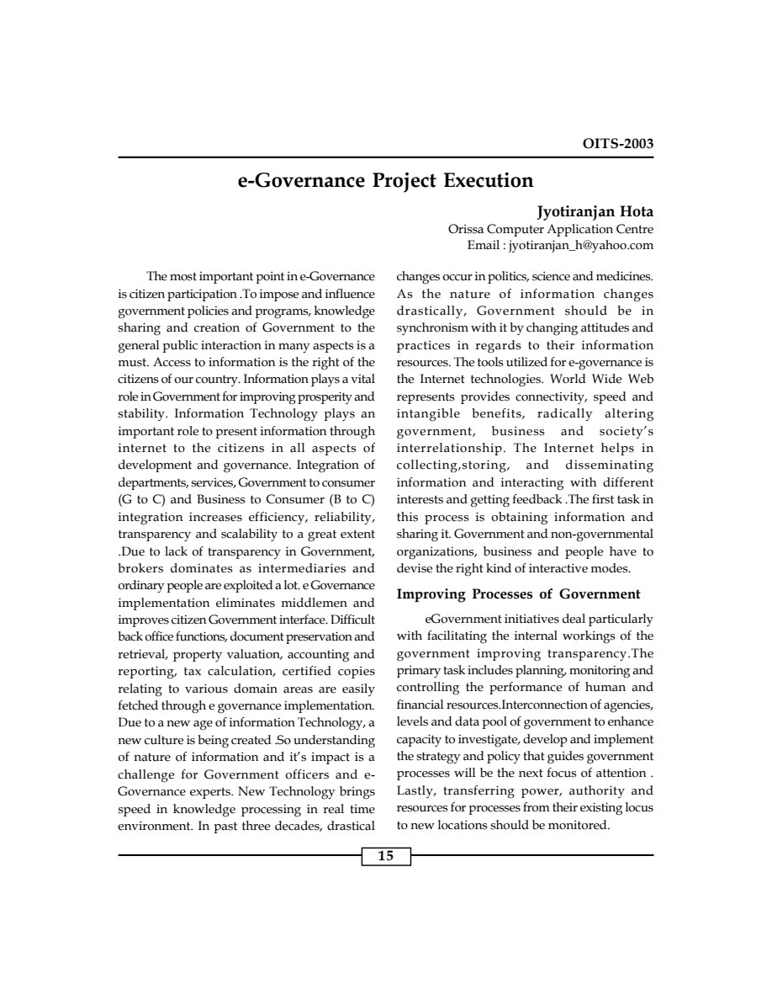

oits-2003.pdf · page 19
Static rendering from the preserved PDF; not an original website image.

Source: June2013Backup/OdiyaOrgNew/forum6/uploaded/mugdha_h/oits bulletin.zip :: oits-2003.pdf
Static rendering from the preserved PDF; not an original website image.

Source: June2013Backup/OdiyaOrgNew/forum6/uploaded/mugdha_h/oits bulletin.zip :: oits-2003.pdf